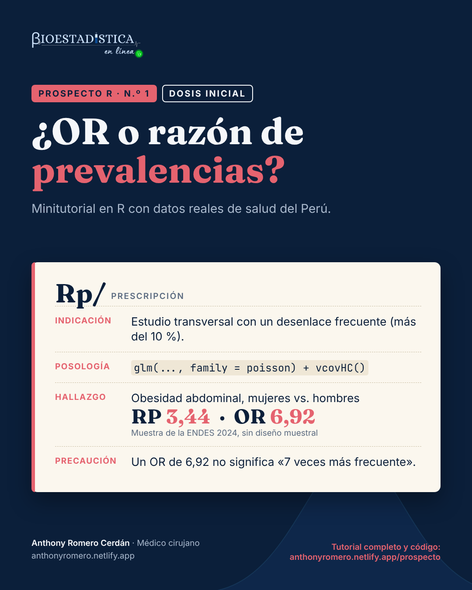

Dosis inicial: qué medida reportar en un estudio transversal con un desenlace frecuente
Prospecto R n.º 1, dosis inicial. Con la ENDES 2024: por qué el odds ratio exagera la asociación cuando el desenlace es frecuente y cómo calcular la razón de prevalencias en R, a mano, con epiR y con una regresión de Poisson.
Dosis inicial
medidas de asociación
estudios transversales
ENDES
Autor/a
Anthony Romero Cerdán
Fecha de publicación
13 de octubre de 2026

Prospecto R es una serie de minitutoriales de análisis de datos de salud en R. Cada entrega responde una pregunta concreta con datos reales del Perú, explica la teoría mínima necesaria y muestra el código completo con sus resultados. Las cifras de este texto se calculan al compilar el documento: no se escriben a mano.
¿Qué dosis te toca?
Cada tema de Prospecto R viene en dos niveles. La dosis inicial tiene lo indispensable para hacer el análisis e interpretarlo bien. La dosis plena tiene todo, incluido lo complejo. Responde:
¿Has ajustado una regresión (logística o de Poisson) en R?
¿Sabes para qué sirven los pesos, los conglomerados y los estratos de una encuesta?
¿Unes dos bases de datos en R sin ayuda?
Si respondiste «sí» a las tres, sigue con la dosis plena. Si alguna fue «no», empieza por la dosis inicial.
Estás en la dosis inicial. Aquí va lo indispensable: elegir la medida, calcularla e interpretarla. Para que el foco esté en eso, se analiza la muestra de la ENDES sin su diseño muestral; al final verás qué cambia cuando se incluye, y la dosis plena lo desarrolla completo.
Nivel
Dosis inicial
Pregunta
¿Qué medida de asociación reporto en un estudio transversal con un desenlace frecuente?
Datos
ENDES 2024, Cuestionario de Salud (INEI)
Paquetes
data.table, epiR, sandwich, lmtest, ggplot2
Requisitos
Saber abrir un archivo en R y qué es una prevalencia
Indicación
Estás analizando un estudio transversal con un desenlace binario (sí/no) y quieres cuantificar su asociación con una exposición. Si el desenlace es frecuente (como regla práctica, más del 10 %), la medida que responde directamente a tu pregunta es la razón de prevalencias (RP), no el odds ratio (OR).
Composición
Todo parte de una tabla 2×2:
Con desenlace
Sin desenlace
Expuestos
a
b
No expuestos
c
d
La prevalencia en expuestos es P_1 = a/(a+b) y en no expuestos, P_0 = c/(c+d). Con ellas:
La RP se lee de forma directa: “la prevalencia en expuestos es k veces la de no expuestos”. El OR compara odds (chances: los que tienen el desenlace entre los que no lo tienen), una escala que casi nadie interpreta bien. Cuando el desenlace es raro, las dos cifras se parecen; cuando es frecuente, el OR se aleja de 1 mucho más que la RP:
Figura 1: Para una misma razón de prevalencias, el OR crece a medida que el desenlace es más frecuente.
Las líneas punteadas marcan la RP real. Con una RP de 3 y una prevalencia de 20 % en no expuestos, el OR ya es 6,0.
Posología
La pregunta del ejemplo: ¿cuánto más frecuente es la obesidad abdominal en las mujeres que en los hombres?
Paso 1. Descarga los datos
En el portal de microdatos del INEI (https://proyectos.inei.gob.pe/microdatos/), elige Consulta por encuestas, luego ENDES y el año 2024, y descarga en formato CSV estos dos módulos:
Módulo
Archivo
Contenido
1640
CSALUD01_2024.csv
Cuestionario de salud de personas de 15 y más años (incluye el perímetro de cintura)
1632
RE223132_2024.csv
Cuestionario individual de mujeres (incluye si está embarazada)
Descomprime los dos archivos dentro de una carpeta ENDES/2024/, junto a tu archivo .qmd. Cada uno crea su propia subcarpeta; en la descarga de 2024 se llaman 968-Modulo1640 y 968-Modulo1632. Si tus datos están en otro lugar o las carpetas tienen otro nombre, cambia ruta en el siguiente bloque de código.
Paso 2. Prepara la base
La obesidad abdominal se define con el perímetro de cintura y los puntos de corte del ATP III: más de 102 cm en hombres y más de 88 cm en mujeres. Hay que excluir a las gestantes, porque en ellas el perímetro abdominal no mide grasa; ese dato está en el cuestionario de mujeres, así que se unen los dos módulos.
library(data.table)ruta <-"ENDES/2024"# carpeta con los módulos descomprimidosif (!dir.exists(ruta)) stop("No encuentro la carpeta '", ruta, "'. Revisa el Paso 1 o cambia `ruta`.")# 1. lee solo las columnas que se usansalud <-fread(file.path(ruta, "968-Modulo1640/CSALUD01_2024.csv"), encoding ="UTF-8",select =c("HHID", "QS20C", "QSSEXO", "QS23", "QS907", "QS908", "PESO15_AMAS"))mujer <-fread(file.path(ruta, "968-Modulo1632/RE223132_2024.csv"), encoding ="UTF-8",select =c("CASEID", "V213"))# 2. une los módulos: la mujer se identifica por su hogar (HHID) y su número de líneasalud[, HHID :=trimws(HHID)]mujer[, `:=`(HHID =trimws(substr(CASEID, 1, nchar(CASEID) -3)),QS20C =as.integer(substr(CASEID, nchar(CASEID) -1, nchar(CASEID))))]d <-merge(salud, mujer[, .(HHID, QS20C, V213)], by =c("HHID", "QS20C"), all.x =TRUE)# 3. crea las variablesd <- d[!is.na(PESO15_AMAS)] # personas con entrevista de saludd[, sexo :=factor(QSSEXO, 1:2, c("Hombre", "Mujer"))]d[, edad :=cut(QS23, c(15, 30, 45, 60, Inf), right =FALSE,labels =c("15-29", "30-44", "45-59", "60+"))]d[, gestante :=!is.na(V213) & V213 ==1] # V213 = 1: embarazada ahorad[, cintura :=fifelse(QS908 ==1& QS907 >=55& QS907 <=170, as.numeric(QS907), NA_real_)]d[gestante ==TRUE, cintura :=NA]d[, obes_abd :=as.integer(fifelse(sexo =="Mujer", cintura >88, cintura >102))]# 4. quédate con quienes tienen la medición válidadc <- d[!is.na(obes_abd)]nrow(dc)
#> [1] 30493
QS908 = 1 indica que la cintura se midió; el rango de 55 a 170 cm descarta valores imposibles. Si quieres el detalle de cada variable, está en la dosis plena.
#> Obesidad
#> Sexo Sí No
#> Mujer 10324 7263
#> Hombre 2200 10706
El orden importa: los expuestos (mujeres) van en la primera fila y el desenlace presente en la primera columna. Así la tabla queda como la de la sección Composición. En el código, c y d se llaman cc y dd porque c() ya es una función de R y d es la base de datos.
Paso 4. Calcula la RP y el OR a mano
a <- tab["Mujer", "Sí"]; b <- tab["Mujer", "No"] # expuestascc <- tab["Hombre", "Sí"]; dd <- tab["Hombre", "No"] # no expuestosp1 <- a / (a + b) # prevalencia en mujeresp0 <- cc / (cc + dd) # prevalencia en hombresc(P1 = p1, P0 = p0, RP = p1 / p0, OR = (a * dd) / (b * cc))
#> P1 P0 RP OR
#> 0,5870245 0,1704634 3,4436992 6,9172984
Paso 5. Obtén los intervalos de confianza con epiR
#> Outcome+ Outcome- Total Prev risk *
#> Exposure+ 10324 7263 17587 58,70 (57,97 to 59,43)
#> Exposure- 2200 10706 12906 17,05 (16,40 to 17,71)
#> Total 12524 17969 30493 41,07 (40,52 to 41,63)
#>
#> Point estimates and 95% CIs:
#> -------------------------------------------------------------------
#> Prev risk ratio 3.44 (3.31, 3.58)
#> Prev odds ratio 6.92 (6.55, 7.31)
#> Attrib prev in the exposed * 41.66 (40.68, 42.63)
#> Attrib fraction in the exposed (%) 70.96 (69.78, 72.10)
#> Attrib prev in the population * 24.03 (23.17, 24.88)
#> Attrib fraction in the population (%) 58.50 (57.46, 59.52)
#> E-value 6.34 (6.07, NA)
#> -------------------------------------------------------------------
#> Uncorrected chi2 test that OR = 1: chi2(1) = 5336.717 Pr>chi2 = <0.001
#> Fisher exact test that OR = 1: Pr>chi2 = <0.001
#> Wald confidence limits
#> CI: confidence interval
#> * Outcomes per 100 population units
Con method = "cross.sectional", epiR llama a la RP Prev risk ratio y al OR Prev odds ratio. Las otras filas (fracción atribuible, valor E) no se necesitan para esta pregunta.
Paso 6. Haz lo mismo con un modelo
La tabla 2×2 no permite ajustar por otras variables; un modelo sí. Para la RP se usa una regresión de Poisson con varianza robusta. El modelo de Poisson por sí solo da intervalos demasiado anchos con un desenlace binario; la varianza robusta lo corrige.
library(sandwich)library(lmtest)m_rp <-glm(obes_abd ~ sexo, data = dc, family =poisson(link ="log"))ic_rp <-coefci(m_rp, vcov. =vcovHC(m_rp, type ="HC0"))exp(cbind(RP =coef(m_rp), ic_rp))["sexoMujer", ]
#> RP 2,5 % 97,5 %
#> 3,443699 3,308582 3,584335
La RP del modelo es la misma de la tabla. Ahora ajusta por edad, que podría confundir la asociación:
m_rp_aj <-glm(obes_abd ~ sexo + edad, data = dc, family =poisson(link ="log"))ic_aj <-coefci(m_rp_aj, vcov. =vcovHC(m_rp_aj, type ="HC0"))rp_aj <-exp(cbind(RP =coef(m_rp_aj), ic_aj))["sexoMujer", ]rp_aj
#> RP 2,5 % 97,5 %
#> 3,532350 3,396382 3,673762
Si en cambio usaras la regresión logística, obtendrías el OR:
m_or <-glm(obes_abd ~ sexo, data = dc, family = binomial)exp(cbind(OR =coef(m_or), confint.default(m_or)))["sexoMujer", ]
#> OR 2,5 % 97,5 %
#> 6,917298 6,548257 7,307138
Resultado
Medida
Estimación
Prevalencia en mujeres
58,7 %
Prevalencia en hombres
17,0 %
Razón de prevalencias
3,44 (IC 95 %: 3,31 a 3,58)
Razón de prevalencias ajustada por edad
3,53 (IC 95 %: 3,40 a 3,67)
Odds ratio
6,92 (IC 95 %: 6,55 a 7,31)
La RP dice que, en la muestra, la obesidad abdominal es 3,44 veces más frecuente en mujeres que en hombres. El OR, 6,92, es 2,0 veces la RP: si se leyera como “7 veces más frecuente”, la asociación quedaría más que duplicada.
Contraindicaciones y reacciones adversas
Leer el OR como una razón de prevalencias. Es el error más frecuente. Un OR de 6,92 no significa “7 veces más frecuente”.
Usar la regresión logística por costumbre. En un estudio transversal con desenlace frecuente, usa la regresión de Poisson con varianza robusta.
Olvidar la varianza robusta. Sin vcovHC(), el modelo de Poisson da la misma RP pero con intervalos demasiado anchos.
Desenlace raro. Si la prevalencia es baja (menos de 10 %), el OR y la RP casi coinciden y la logística es aceptable.
Cómo reportarlo
En la muestra de la ENDES 2024 (n = 30 493 personas de 15 y más años), la prevalencia de obesidad abdominal fue 58,7 % en mujeres y 17,0 % en hombres; la razón de prevalencias fue 3,44 (IC 95 %: 3,31 a 3,58), estimada con regresión de Poisson con varianza robusta.
Si tus datos vienen de un hospital o de una muestra simple, este análisis es el completo. Si vienen de una encuesta con diseño complejo, como la ENDES, sigue leyendo.
Siguiente dosis
Lo que esta dosis dejó fuera
Las cifras de arriba describen a las personas entrevistadas, no a la población peruana. La ENDES es una muestra aleatoria, pero no simple: algunas zonas tienen en la muestra más peso del que tienen en la población, y los hogares se eligen agrupados en conglomerados. Para hablar de la población hay que usar su diseño muestral (pesos, conglomerados y estratos). Con él, la prevalencia es 62,0 % en mujeres y 20,3 % en hombres, y la RP es 3,05, no 3,44.
Cómo declarar el diseño muestral de la ENDES con el paquete survey y por qué cambia las cifras.
Ajuste por confusión dentro del diseño (edad y área de residencia).
Cómo obtener una RP desde una regresión logística (estandarización marginal).
Por qué el modelo log-binomial suele fallar con desenlaces frecuentes.
Una trampa de los datos de antropometría de la ENDES.
Cómo comprobar el flujo reproduciendo una cifra oficial del INEI.
Referencias
Zou G. A modified Poisson regression approach to prospective studies with binary data. Am J Epidemiol. 2004;159(7):702-6.
Barros AJD, Hirakata VN. Alternatives for logistic regression in cross-sectional studies: an empirical comparison of models that directly estimate the prevalence ratio. BMC Med Res Methodol. 2003;3:21.
Expert Panel on Detection, Evaluation, and Treatment of High Blood Cholesterol in Adults. Executive summary of the third report of the National Cholesterol Education Program (NCEP) Adult Treatment Panel III. JAMA. 2001;285(19):2486-97.